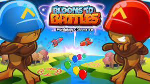
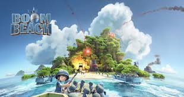

Video Games
I love video games.
I don't know any other way to say it.
They have been part of my life from a young age, and they will still be a part of me as I grow into an adult.
Games
FIFA
FIFA is a successful soccer/football game franchise published by EA. Every year it releases a new version with increased quality graphics, and updated rosters, teams, statistics and celebrations. It has several game modes (single player and multiplayer) with Ultimate Team, Career Mode and the Draft.

BTD Battles
Bloons Tower Defense Battles is a multiplayer competitive version of BTD 5 with different strategies, tracks and other features. In this game, players increase their income manually by sending bloons (Assault Mode) or directly increase income (Defense Mode). There are also new modes like Battle Arenas with Club modes that change different variants to add new strategy and diversity to the game. Card Battles is the latest addition to the game, where a deck of selected cards are used to place towers and/or send bloons.
Rocket League
Rocket League is a vehicular soccer game consisting of one to four players per team. There are different mutators that modify some aspects of gameplay that change the gravity, ball size, shape and other factors. There are also multiple game modes such as Rumble Mode which incorporates unusually power-ups that can help in scoring a goal or stopping the opposition from scoring.

Boom Beach
Boom Beach is a strategy game that combines attacks on and from other players with attacks against computer generated bases. This game's story line is set in a tropical archipelago with the player on an island with defenses and troops. Players can build their base, upgrade defenses and other buildings and upgrade troops. There have been several updates to increase the variety and popularity like new gunboat abilities, troops, submarine and prototype defenses. A main addition has been weekly/monthly challenges like Dr. Terror, Lieutenant Gearheart, Hammerman, or the Mega Crab.
GTA
Grand Theft Auto V is the fifteenth installment in the GTA serioes developed by Rockstar. This video game is set in the city of Los Santos and its surrounding areas and tells the stories of three protagonists: Michael, Trevor and Franklin. This is a real-life simulation, imaging the city of Los Angeles, which also has online mode in which the gamer can go on his own adventure.